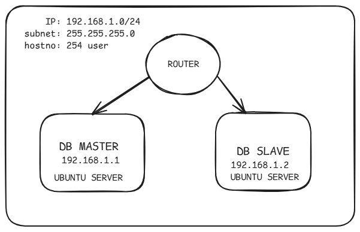
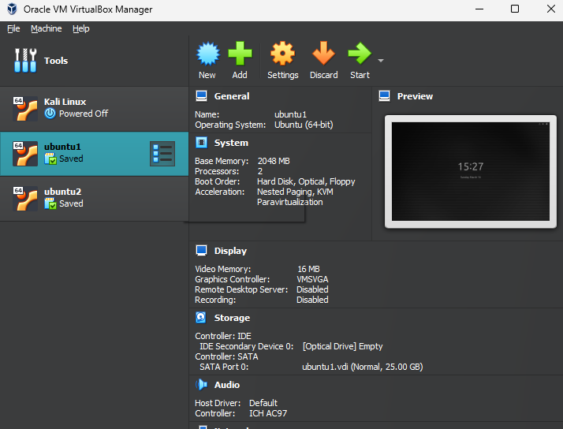
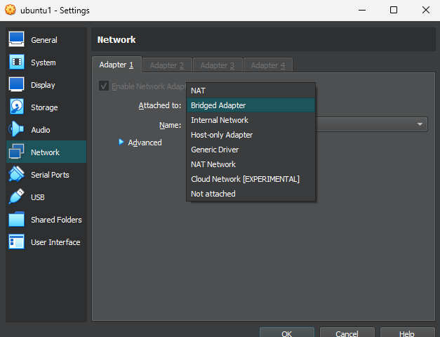
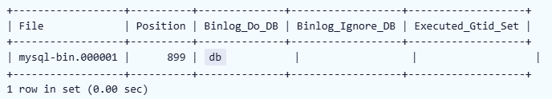
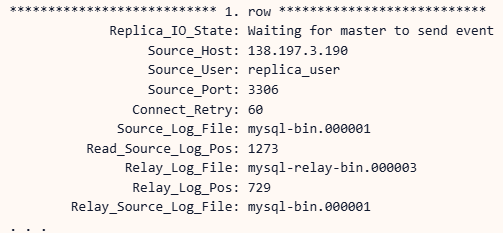

Introduction
In this article, we will walk through the steps of creating a simple database replication using virtualbox simulation.
-
Two Server linux
- Database Master
- Database Slave
- Internet Connection for download

Step 1: Server Configuration
Step 1.1 — Install two Ubuntu OS on Virtualbox
you can setup as below:
=========
DB Master
=========
username: ubuntu1
password: abc123
=========
DB Slave
=========
username: ubuntu2
password: abc123

Step 1.2 — Server Network Configuration
just add network setup connection wired as below (also set network adapter into NAT):
=========
DB Master
=========
ip addr: 192.168.1.1
subnet : 255.255.255.0
=========
DB Slave
=========
ip addr: 192.168.1.2
subnet : 255.255.255.0

Step 2: MySQL
Step 2.1 — Installing MySQL (Master & Slave Server)
// Command
$ sudo apt update //update server package
$ sudo apt install mysql-server //install mysql package
$ sudo systemctl start mysql.service //start the mysql service
Step 2.2 — Configure MySQL User (Master & Slave Server)
// Command
$ sudo mysql //enter into mysql
//IN MYSQL Configure User access by password
mysql> ALTER USER 'root'@'localhost' IDENTIFIED WITH mysql_native_password BY 'password'; //update access root mysql
mysql> exit //exit
//Re-enter MYSQL User mysql by password
$ mysql -u root -p //enter into mysql
// by default mysql user use auth_socket:
// for revert change the access as default run command in mysql as below:
mysql> ALTER USER 'root'@'localhost' IDENTIFIED WITH auth_socket;
Step 2.3 — Configure MySQL Source
// Command
$ sudo nano /etc/mysql/mysql.conf.d/mysqld.cnf //change the mysql config
//In mysqld.cnf change as below:
bind-address = 0.0.0.0 //source_server_ip
server-id = 1 // for server master, then set 2 if Slave
log_bin = /var/log/mysql/mysql-bin.log
# binlog_do_db = include_database_name //open if want to replicate db
# binlog_ignore_db = db_to_ignore // /open if remove replicate db
relay-log = /var/log/mysql/mysql-relay-bin.log //open for slave only
Ctr+x the y.
//Restart MYSQL
$ sudo systemctl restart mysql
Step 2.4 — Configure MySQL Master
// Command
$ mysql -u root -p //enter into mysql
//IN MYSQL Configure Replica User access by password
mysql> CREATE USER 'replica'@'*' IDENTIFIED WITH mysql_native_password BY 'Replica'; //create access replica mysql
mysql> GRANT REPLICATION SLAVE ON *.* TO 'replica'@'192.168.56.102';
mysql> FLUSH PRIVILEGES;
mysql> exit //exit
//Re-enter MYSQL User mysql by password
$ mysql -u replica -p //enter into mysql to test
mysql> SHOW MASTER STATUS;

Step 2.4 — Configure MySQL Slave
// Command
$ mysql -u root -p //enter into mysql
//IN MYSQL Configure Replica Source
mysql> CHANGE REPLICATION SOURCE TO
mysql> SOURCE_HOST='192.168.1.1',
mysql> SOURCE_USER='replica',
mysql> SOURCE_PASSWORD='Replica',
mysql> SOURCE_LOG_FILE='mysql-bin.000001',
mysql> SOURCE_LOG_POS=899;
mysql> exit //exit
// Start Replica in slave
mysql> START REPLICA;
mysql> SHOW REPLICA STATUS\G;

Step 3: Test
Step 3.1 — Test write the recod data in Master & show in Slave
================
//MASTER DB
================
// Command
$ mysql -u root -p //enter into mysql
mysql> create database test;
mysql> show databases;
================
//SLAVE DB
================
// Command
$ mysql -u root -p //enter into mysql
mysql> show databases;
mysql> SHOW REPLICA STATUS\G;
Conclusion
Master-slave replication only single directional write. Only master database can write while slave only can read. It is important for us alert and grab this concept precisely.
Also if you want replicate the master that already have data and db, make sure you copy the db and dump into replica db first.
you can use method to copy db as below:
-
SCP METHOD:
-
scp "source" "destination"
scp db.sql sammy@replica_server_ip:/tmp/
-
scp "source" "destination"
-
SSH METHOD then mysql dump:
-
ssh sammy@source_server_ip
sudo mysqldump -u root db > db.sql
-
ssh sammy@source_server_ip